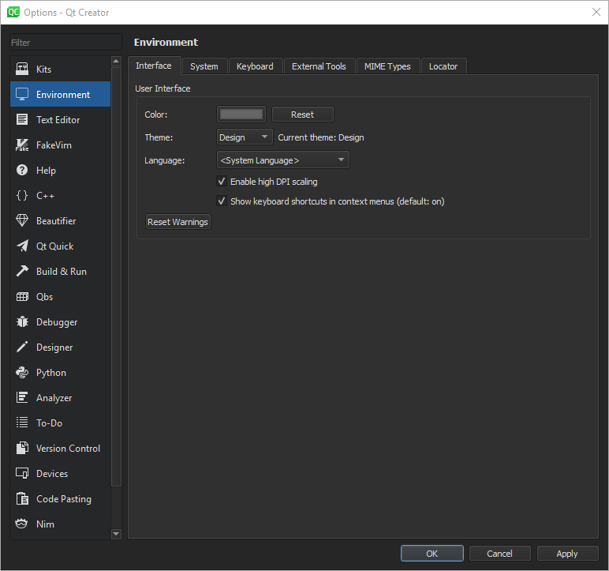

IOptionsPage Class
class Core::IOptionsPageThe IOptionsPage class is an interface for providing pages for the Options dialog (called Preferences on macOS). More...
| Header: | #include <coreplugin/dialogs/ioptionspage.h> |
Public Functions
| IOptionsPage(QObject *parent = nullptr, bool registerGlobally = true) | |
| virtual void | apply() |
| Utils::Id | category() const |
| QIcon | categoryIcon() const |
| QString | displayCategory() const |
| QString | displayName() const |
| virtual void | finish() |
| Utils::Id | id() const |
| virtual bool | matches(const QRegularExpression ®exp) const |
| void | setWidgetCreator(const Core::IOptionsPage::WidgetCreator &widgetCreator) |
| virtual QWidget * | widget() |
Static Public Members
| const QList<Core::IOptionsPage *> | allOptionsPages() |
Protected Functions
| void | setCategory(Utils::Id category) |
| void | setCategoryIcon(const Utils::Icon &categoryIcon) |
| void | setCategoryIconPath(const Utils::FilePath &categoryIconPath) |
| void | setDisplayCategory(const QString &displayCategory) |
| void | setDisplayName(const QString &displayName) |
| void | setId(Utils::Id id) |
Detailed Description

Member Function Documentation
IOptionsPage::IOptionsPage(QObject *parent = nullptr, bool registerGlobally = true)
Constructs an options page with the given parent and registers it at the global options page pool if registerGlobally is true.
[static] const QList<Core::IOptionsPage *> IOptionsPage::allOptionsPages()
Returns a list of all options pages.
[virtual] void IOptionsPage::apply()
Called when selecting the Apply button on the options page dialog. Should detect whether any changes were made and store those.
Either override this function in a derived class, or set a widget creator.
See also setWidgetCreator().
Utils::Id IOptionsPage::category() const
Returns the unique id for the category that the options page should be displayed in. This id is used for sorting the list on the left side of the Options dialog.
See also setCategory().
QIcon IOptionsPage::categoryIcon() const
Returns the category icon of the options page. This icon is displayed in the list on the left side of the Options dialog.
See also setCategoryIcon().
QString IOptionsPage::displayCategory() const
Returns the translated category name of the options page. This name is displayed in the list on the left side of the Options dialog.
See also setDisplayCategory().
QString IOptionsPage::displayName() const
Returns the translated display name of the options page.
See also setDisplayName().
[virtual] void IOptionsPage::finish()
Called directly before the Options dialog closes. Here you should delete the widget that was created in widget() to free resources.
Either override this function in a derived class, or set a widget creator.
See also setWidgetCreator().
Utils::Id IOptionsPage::id() const
Returns a unique identifier for referencing the options page.
See also setId().
[virtual] bool IOptionsPage::matches(const QRegularExpression ®exp) const
Is used by the Options dialog search filter to match regexp to this options page. This defaults to take the widget and then looks for all child labels, check boxes, push buttons, and group boxes. Should return true when a match is found.
[protected] void IOptionsPage::setCategory(Utils::Id category)
Uses category to sort the options pages.
See also category().
[protected] void IOptionsPage::setCategoryIcon(const Utils::Icon &categoryIcon)
Sets categoryIcon as the category icon of the options page.
See also categoryIcon().
[protected] void IOptionsPage::setCategoryIconPath(const Utils::FilePath &categoryIconPath)
Sets categoryIconPath as the path to the category icon of the options page.
[protected] void IOptionsPage::setDisplayCategory(const QString &displayCategory)
Sets displayCategory as the display category of the options page.
See also displayCategory().
[protected] void IOptionsPage::setDisplayName(const QString &displayName)
Sets displayName as the display name of the options page.
See also displayName().
[protected] void IOptionsPage::setId(Utils::Id id)
Sets the id of the options page.
See also id().
void IOptionsPage::setWidgetCreator(const Core::IOptionsPage::WidgetCreator &widgetCreator)
Sets the widgetCreator callback to create page widgets on demand. The widget will be destroyed on finish().
[virtual] QWidget *IOptionsPage::widget()
Returns the widget to show in the Options dialog. You should create a widget lazily here, and delete it again in the finish() method. This method can be called multiple times, so you should only create a new widget if the old one was deleted.
Alternatively, use setWidgetCreator() to set a callback function that is used to lazily create a widget in time.
Either override this function in a derived class, or set a widget creator.